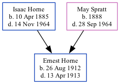

Ernest John Horne 1912 - 1913
[ Home ] | [ Calendar ] | [ Surnames Index ] | [ Family History ]The 2nd of 7 children of Isaac Horne (a hay trusser & thatcher heavy worker market gardener) and May SprattErnest Horne, the uncle of Nigel Horne, was born in Thanet, Kent, England on Aug 26, 19121.
He died in Thanet on Apr 13, 19131,2.
Parents
- Isaac was born on Apr 10, 1885
- May was born on Jan 1, 1888
Citations
- England & Wales, FreeBMD Death Index: 1837-1915 Online publication - Provo, UT, USA: The Generations Network, Inc., 2006.Original data - General Register Office. England and Wales Civil Registration Indexes. London, England: General Register Office. © Crown copyright. Published by permission of the Cont
- England & Wales deaths 1837-2007 - Findmypast
Media
England & Wales deaths 1837-2007 Transcription - BMD-D-1913-2-AZ-000448-010
England & Wales births 1837-2006 Transcription - BMD-B-1912-4-AZ-000650-100
Family Tree
Generated by ged2site. Last updated on Nov 13, 2024